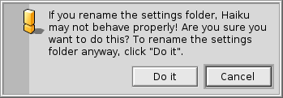

Haiku's filesystem layout is quite transparent, trying to always use non-cryptic names for files and folders, that don't leave the user guessing. Files and folders that are important for the system to function properly, are protected from accidental tempering by showing one of these alerts:

The second alert pops up if you try to rename or delete something in the system hierarchy. Here, the "Do it" button will only become clickable when you're holding down the SHIFT key.
Generally, there are three seperate branches springing from the root folder of the boot volume:
| /boot/beos/ | belongs to the system. Don't touch! | |
| /boot/common/ | holds files that are shared between users. | |
| /boot/home/ | is your personal folder where you keep your data and settings. |
The system folder - /boot/beos/
The fact that it's called "beos" shows Haiku's BeOS heritage. It wasn't renamed yet to ensure backward compatibility with BeOS software.
Whatever it's named, you should not alter what's inside. Every update of Haiku can add, remove or overwrite anything within it. If you want to add functionality, maybe with other Tracker Add-Ons or Translators or maybe another hardware driver, you install these things under your own /boot/home/ hierarchy or, if it's supposed to be for every user, under /boot/common/. As long as Haiku isn't multi-user, this distinction has no apparent effect, as there's only one user with one home folder. But since there will be support for more users than one eventually, it makes sense to learn the right way from the start.
So, let's say you want to install a new Translator for the latest image format, you don't simply copy it into the respective system folder. Remember: Don't touch!
Instead, you put it into the mirrored hierarchy under /boot/common/ or /boot/home/config/.
In our example the location for Translators in the system folder would be
/boot/beos/add-ons/Translators/
So, the user "mirror" folder is either
/boot/home/config/add-ons/Translators/
or
/boot/common/add-ons/Translators/
This has another advantage: If the component you have installed messes things up (which is possible as you install hardware drivers like this, too) you are able to choose "Disable User Add-Ons" from the Boot Loader menu and are thus always able to boot without the offending component.
Most of the time, however, you won't have to deal with these things at all, since every software that comes from a trusted source should include an installation routine that handles these things.
The common folder - /boot/common/
Haiku is not a multi-user system yet. Once it is though, every user has her own home folder that is not accessible to anyone else. Every application or added component like Tracker Add-Ons, Translators etc. as well as any data that's supposed to be shared between different users, go here.
The home folder - /boot/home/
This folder belongs to you. Here you can create and delete files and folders as you wish. However, you shouldn't mess too much with the ~/config/ directory and its subfolders. You could delete e.g. the ~/config/settings/ folder without damaging the operating system itself, but who wants to lose all his configurations and application settings? In any case, the system warns you with the at the top mentioned alert.
Besides the ~/config/add-ons/ folder, which mirrors the system's add-ons folder for additional components as described above, there are a few other folders of interest. (By the way, the tilde ("~") is a shortcut for your home folder, so you don't always have to write "/boot/home/" in Terminal.)
| By default, this is where your mails are kept. | ||
| ~/queries | Queries are stored, by default temporarily for 7 days, in this folder. | |
| ~/config/be/ | Again from our BeOS legacy, the be folder contains what's shown in the Deskbar menu. You can add and remove items either with the Deskbar configuration panel or by putting files, folders or links into this folder directly. | |
| ~/config/bin/ | Complements the system's /boot/beos/bin/ folder and holds all your command line programs. | |
| ~/config/boot/ | This folder holds the UserBootscript which is executed after the system has booted up and the UserShutdownscript which will be executed before the system does all the necessary things to safely shut down. | |
| ~/config/fonts/ | Simply copy a TrueType or Postscript font into this folder and its usable right away. | |
| ~/config/settings/ | This folder contains the settings to all applications and a few configurations for the system. Some applications manage their settings in their own subfolders, others simply put their configuration file in there. | |
| ~/config/settings/beos_mime/ | In this MIME database Haiku keeps track of all the different filetypes and their settings. | |
| ~/config/settings/kernel/drivers/ | There, one settings files that may be of interest. kernel offers some low level configurations like disabling SMP, activating serial debugging or enabling advanced power management. You activate a configuration line by removing the commentary symbol "#". Be careful here! | |
| ~/config/settings/Tracker/ | Here are some interesting subfolders: | |
| DefaultFolderTemplate/ | Show and arrange all attributes and the window size to your liking. Every new folder you create will use it as a template. | |
| DefaultQueryTemplates/ | You can define the layout of query result windows for certain filetypes. See topic Query: The result window. | |
| Go/ | Put links to your favorite locations in here to make them available e.g. in open and save panels. See topic Haiku's GUI: Favorites and recent folders. | |
| Tracker New Template/ | Add a template for any filetype that's then available from Tracker's File | New... menu. See topic Tracker: Working with files. |